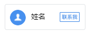
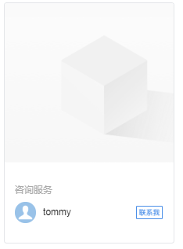
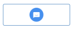
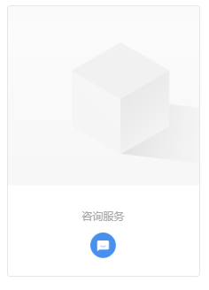
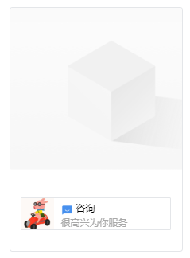
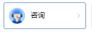
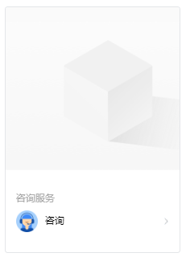
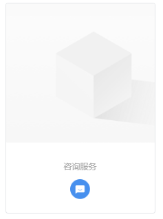

目录
调用接口的应用需要满足如下的权限：
| 应用类型 | 权限要求 |
|---|---|
| 自建应用 | 配置到「客户联系 可调用接口的应用」中 |
| 代开发应用 | 具有「配置「联系我」二维码」权限 |
| 第三方应用 | 具有「配置「联系我」二维码」权限（营销获客应用客户建联方式配置为「「联系我」二维码」）； |
企业可以在管理后台-客户联系-加客户中配置成员的「联系我」的二维码或者小程序按钮，客户通过扫描二维码或点击小程序上的按钮，即可获取成员联系方式，主动联系到成员。
企业可通过此接口为具有客户联系功能的成员生成专属的「联系我」二维码或者「联系我」按钮。
如果配置的是「联系我」按钮，需要开发者的小程序接入小程序插件。
注意:
通过API添加的「联系我」不会在管理端进行展示，每个企业可通过API最多配置50万个「联系我」。
用户需要妥善存储返回的config_id，config_id丢失可能导致用户无法编辑或删除「联系我」。
临时会话模式不占用「联系我」数量，但每日最多添加10万个，并且仅支持单人。
临时会话模式的二维码，添加好友完成后该二维码即刻失效。
请求方式：POST（HTTPS）
请求地址：https://qyapi.weixin.qq.com/cgi-bin/externalcontact/add_contact_way?access_token=ACCESS_TOKEN
请求示例：
{ "type" :1, "scene":1, "style":1, "remark":"渠道客户", "skip_verify":true, "state":"teststate", "user" : ["zhangsan", "lisi", "wangwu"], "party" : [2, 3], "is_temp":true, "expires_in":86400, "chat_expires_in":86400, "unionid":"oxTWIuGaIt6gTKsQRLau2M0AAAA", "is_exclusive":true, "mark_source":true, "conclusions": { "text": { "content":"文本消息内容" }, "image": { "media_id": "MEDIA_ID" }, "link": { "title": "消息标题", "picurl": "https://example.pic.com/path", "desc": "消息描述", "url": "https://example.link.com/path" }, "miniprogram": { "title": "消息标题", "pic_media_id": "MEDIA_ID", "appid": "wx8bd80126147dfAAA", "page": "/path/index.html" } } }点击复制
参数说明：
| 参数 | 必须 | 说明 |
|---|---|---|
| access_token | 是 | 调用接口凭证 |
| type | 是 | 联系方式类型,1-单人, 2-多人 |
| scene | 是 | 场景，1-在小程序中联系，2-通过二维码联系 |
| style | 否 | 在小程序中联系时使用的控件样式，详见附表 |
| remark | 否 | 联系方式的备注信息，用于助记，不超过30个字符 |
| skip_verify | 否 | 外部客户添加时是否无需验证，默认为true |
| state | 否 | 企业自定义的state参数，用于区分不同的添加渠道，在调用“获取客户详情”时会返回该参数值，不超过30个字符 |
| user | 否 | 使用该联系方式的用户userID列表，在type为1时为必填，且只能有一个 |
| party | 否 | 使用该联系方式的部门id列表，只在type为2时有效 |
| is_temp | 否 | 是否临时会话模式，true表示使用临时会话模式，默认为false |
| expires_in | 否 | 临时会话二维码有效期，以秒为单位。该参数仅在is_temp为true时有效，默认7天，最多为14天 |
| chat_expires_in | 否 | 临时会话有效期，以秒为单位。该参数仅在is_temp为true时有效，默认为添加好友后24小时，最多为14天 |
| unionid | 否 | 可进行临时会话的客户unionid，该参数仅在is_temp为true时有效，如不指定则不进行限制 |
| is_exclusive | 否 | 是否开启同一外部企业客户只能添加同一个员工，默认为否，开启后，同一个企业的客户会优先添加到同一个跟进人 |
| mark_source | 否 | 是否标记客户添加来源为该应用创建的「联系我」, 默认为true; 仅对「营销获客」应用生效 |
| conclusions | 否 | 结束语，会话结束时自动发送给客户，可参考“结束语定义”，仅在is_temp为true时有效 |
注意，每个联系方式最多配置100个使用成员（包含部门展开后的成员）
当设置为临时会话模式时（即is_temp为true），联系人仅支持配置为单人，暂不支持多人
使用unionid需要调用方（企业或服务商）的企业微信“客户联系”中已绑定微信开发者账户
party或user必须在应用可见范围或客户可建联的成员范围内
返回结果：
{ "errcode": 0, "errmsg": "ok", "config_id":"42b34949e138eb6e027c123cba77fAAA", "qr_code":"https://p.qpic.cn/wwhead/duc2TvpEgSdicZ9RrdUtBkv2UiaA/0" }点击复制
参数说明：
| 参数 | 说明 |
|---|---|
| errcode | 返回码 |
| errmsg | 对返回码的文本描述内容 |
| config_id | 新增联系方式的配置id |
| qr_code | 联系我二维码链接，仅在scene为2时返回 |
获取企业配置的「联系我」二维码和「联系我」小程序按钮。
请求方式：POST（HTTPS）
请求地址：https://qyapi.weixin.qq.com/cgi-bin/externalcontact/get_contact_way?access_token=ACCESS_TOKEN
请求示例：
{ "config_id":"42b34949e138eb6e027c123cba77fad7" }点击复制
参数说明：
| 参数 | 必须 | 说明 |
|---|---|---|
| access_token | 是 | 调用接口凭证 |
| config_id | 是 | 联系方式的配置id |
返回结果：
{ "errcode": 0, "errmsg": "ok", "contact_way": { "config_id":"42b34949e138eb6e027c123cba77fAAA", "type":1, "scene":1, "style":2, "remark":"test remark", "skip_verify":true, "state":"teststate", "qr_code":"https://p.qpic.cn/wwhead/duc2TvpEgSdicZ9RrdUtBkv2UiaA/0", "user" : ["zhangsan", "lisi", "wangwu"], "party" : [2, 3], "is_temp":true, "expires_in":86400, "chat_expires_in":86400, "unionid":"oxTWIuGaIt6gTKsQRLau2M0AAAA", "mark_source":true, "conclusions": { "text": { "content":"文本消息内容" }, "image": { "pic_url": "https://p.qpic.cn/pic_wework/XXXXX" }, "link": { "title": "消息标题", "picurl": "https://example.pic.com/path", "desc": "消息描述", "url": "https://example.link.com/path" }, "miniprogram": { "title": "消息标题", "pic_media_id": "MEDIA_ID", "appid": "wx8bd80126147dfAAA", "page": "/path/index" } } } }点击复制
参数说明：
| 参数 | 说明 |
|---|---|
| errcode | 返回码 |
| errmsg | 对返回码的文本描述内容 |
| config_id | 新增联系方式的配置id |
| type | 联系方式类型，1-单人，2-多人 |
| scene | 场景，1-在小程序中联系，2-通过二维码联系 |
| is_temp | 是否临时会话模式，默认为false，true表示使用临时会话模式 |
| remark | 联系方式的备注信息，用于助记 |
| skip_verify | 外部客户添加时是否无需验证 |
| state | 企业自定义的state参数，用于区分不同的添加渠道，在调用“获取客户详情”时会返回该参数值 |
| style | 小程序中联系按钮的样式，仅在scene为1时返回，详见附录 |
| qr_code | 联系二维码的URL，仅在scene为2时返回 |
| user | 使用该联系方式的用户userID列表 |
| party | 使用该联系方式的部门id列表 |
| expires_in | 临时会话二维码有效期，以秒为单位 |
| chat_expires_in | 临时会话有效期，以秒为单位 |
| unionid | 可进行临时会话的客户unionid |
| mark_source | 是否标记客户添加来源为该应用创建的「联系我」; 仅对「营销获客」应用生效 |
| conclusions | 结束语，可参考“结束语定义” |
获取企业配置的「联系我」二维码和「联系我」小程序插件列表。不包含临时会话。
注意，该接口仅可获取2021年7月10日以后创建的「联系我」
请求方式：POST（HTTPS）
请求地址：https://qyapi.weixin.qq.com/cgi-bin/externalcontact/list_contact_way?access_token=ACCESS_TOKEN
请求示例：
{ "start_time":1622476800, "end_time":1625068800, "cursor":"CURSOR", "limit":1000 }点击复制
参数说明：
| 参数 | 必须 | 说明 |
|---|---|---|
| access_token | 是 | 调用接口凭证 |
| start_time | 否 | 「联系我」创建起始时间戳, 默认为90天前 |
| end_time | 否 | 「联系我」创建结束时间戳, 默认为当前时间 |
| cursor | 否 | 分页查询使用的游标，为上次请求返回的 next_cursor |
| limit | 否 | 每次查询的分页大小，默认为100条，最多支持1000条 |
返回结果：
{ "errcode": 0, "errmsg": "ok", "contact_way": [ { "config_id":"534b63270045c9ABiKEE814ef56d91c62f" }, { "config_id":"87bBiKEE811c62f63270041c62f5c9A4ef" } ], "next_cursor":"NEXT_CURSOR" }点击复制
参数说明：
| 参数 | 说明 |
|---|---|
| errcode | 返回码 |
| errmsg | 对返回码的文本描述内容 |
| contact_way.config_id | 联系方式的配置id |
| next_cursor | 分页参数，用于查询下一个分页的数据，为空时表示没有更多的分页 |
更新企业配置的「联系我」二维码和「联系我」小程序按钮中的信息，如使用人员和备注等。
请求方式：POST（HTTPS）
请求地址：https://qyapi.weixin.qq.com/cgi-bin/externalcontact/update_contact_way?access_token=ACCESS_TOKEN
请求示例：
{ "config_id":"42b34949e138eb6e027c123cba77fAAA", "remark":"渠道客户", "skip_verify":true, "style":1, "state":"teststate", "user" : ["zhangsan", "lisi", "wangwu"], "party" : [2, 3], "expires_in":86400, "chat_expires_in":86400, "unionid":"oxTWIuGaIt6gTKsQRLau2M0AAAA", "mark_source":true, "conclusions": { "text": { "content":"文本消息内容" }, "image": { "media_id": "MEDIA_ID" }, "link": { "title": "消息标题", "picurl": "https://example.pic.com/path", "desc": "消息描述", "url": "https://example.link.com/path" }, "miniprogram": { "title": "消息标题", "pic_media_id": "MEDIA_ID", "appid": "wx8bd80126147dfAAA", "page": "/path/index" } } }点击复制
参数说明：
| 参数 | 必须 | 说明 |
|---|---|---|
| access_token | 是 | 调用接口凭证 |
| config_id | 是 | 企业联系方式的配置id |
| remark | 否 | 联系方式的备注信息，不超过30个字符，将覆盖之前的备注 |
| skip_verify | 否 | 外部客户添加时是否无需验证 |
| style | 否 | 样式，只针对“在小程序中联系”的配置生效 |
| state | 否 | 企业自定义的state参数，用于区分不同的添加渠道，在调用“获取客户详情”时会返回该参数值 |
| user | 否 | 使用该联系方式的用户列表，将覆盖原有用户列表 |
| party | 否 | 使用该联系方式的部门列表，将覆盖原有部门列表，只在配置的type为2时有效 |
| expires_in | 否 | 临时会话二维码有效期，以秒为单位，该参数仅在临时会话模式下有效 |
| chat_expires_in | 否 | 临时会话有效期，以秒为单位，该参数仅在临时会话模式下有效 |
| unionid | 否 | 可进行临时会话的客户unionid，该参数仅在临时会话模式有效，如不指定则不进行限制 |
| mark_source | 否 | 是否标记客户添加来源为该应用创建的「联系我」, 默认为true; 仅对「营销获客」应用生效, 且只能由创建此「联系我」的应用进行更新 |
| conclusions | 否 | 结束语，会话结束时自动发送给客户，可参考“结束语定义”，仅临时会话模式（is_temp为true）可设置 |
注意：已失效的临时会话联系方式无法进行编辑
当临时会话模式时（即is_temp为true），联系人仅支持配置为单人，暂不支持多人
party或user必须在应用可见范围或客户可建联的成员范围内
返回结果：
{ "errcode": 0, "errmsg": "ok" }点击复制
参数说明：
| 参数 | 说明 |
|---|---|
| errcode | 返回码 |
| errmsg | 对返回码的文本描述内容 |
删除一个已配置的「联系我」二维码或者「联系我」小程序按钮。
请求方式：POST（HTTPS）
请求地址：https://qyapi.weixin.qq.com/cgi-bin/externalcontact/del_contact_way?access_token=ACCESS_TOKEN
请求示例：
{ "config_id":"42b34949e138eb6e027c123cba77fAAA" }点击复制
参数说明：
| 参数 | 必须 | 说明 |
|---|---|---|
| access_token | 是 | 调用接口凭证 |
| config_id | 是 | 企业联系方式的配置id |
返回结果：
{ "errcode": 0, "errmsg": "ok" }点击复制
参数说明：
| 参数 | 说明 |
|---|---|
| errcode | 返回码 |
| errmsg | 对返回码的文本描述内容 |
将指定的企业成员和客户之前的临时会话断开，断开前会自动下发已配置的结束语。
请求方式：POST（HTTPS）
请求地址：https://qyapi.weixin.qq.com/cgi-bin/externalcontact/close_temp_chat?access_token=ACCESS_TOKEN
请求示例：
{ "userid":"zhangyisheng", "external_userid":"woAJ2GCAAAXtWyujaWJHDDGi0mACHAAA" }点击复制
参数说明：
| 参数 | 必须 | 说明 |
|---|---|---|
| access_token | 是 | 调用接口凭证 |
| userid | 是 | 企业成员的userid |
| external_userid | 是 | 客户的外部联系人userid |
注意：请保证传入的企业成员和客户之间有仍然有效的临时会话, 通过其他方式的添加外部联系人无法通过此接口关闭会话。
返回结果：
{ "errcode": 0, "errmsg": "ok" }点击复制
参数说明：
| 参数 | 说明 |
|---|---|
| errcode | 返回码 |
| errmsg | 对返回码的文本描述内容 |
字段内容：
"conclusions": { "text": { "content":"文本消息内容" }, "image": { "media_id": "MEDIA_ID", "pic_url": "https://p.qpic.cn/pic_wework/XXXXX" }, "link": { "title": "消息标题", "picurl": "https://example.pic.com/path", "desc": "消息描述", "url": "https://example.link.com/path" }, "miniprogram": { "title": "消息标题", "pic_media_id": "MEDIA_ID", "appid": "wx8bd80126147dfAAA", "page": "/path/index" } } }点击复制
参数说明：
| 参数 | 说明 |
|---|---|
| text.content | 消息文本内容,最长为4000字节 |
| image.media_id | 图片的media_id |
| image.pic_url | 图片的url |
| link.title | 图文消息标题，最长为128字节 |
| link.picurl | 图文消息封面的url |
| link.desc | 图文消息的描述，最长为512字节 |
| link.url | 图文消息的链接 |
| miniprogram.title | 小程序消息标题，最长为64字节 |
| miniprogram.pic_media_id | 小程序消息封面的mediaid，封面图建议尺寸为520*416 |
| miniprogram.appid | 小程序appid，必须是关联到企业的小程序应用 |
| miniprogram.page | 小程序page路径 |
text、image、link和miniprogram四者不能同时为空；
text与另外三者可以同时发送，此时将会以两条消息的形式触达客户;
image、link和miniprogram只能有一个，如果三者同时填，则按image、link、miniprogram的优先顺序取参，也就是说，如果image与link同时传值，则只有image生效;
media_id可以通过素材管理接口获得;
构造结束语使用image消息时，只能填写meida_id字段,获取含有image结构的联系我方式时，返回pic_url字段。
企业微信为“在小程序中联系”按钮提供了如下的默认样式，用户可根据需要自行选择，style参数和样式的对应关系如下:
单人类型：
样式1(style=1)：

样式2(style=2)：

样式3(style=3)：

多人类型：
样式1(style=1):

样式2(style=2):
